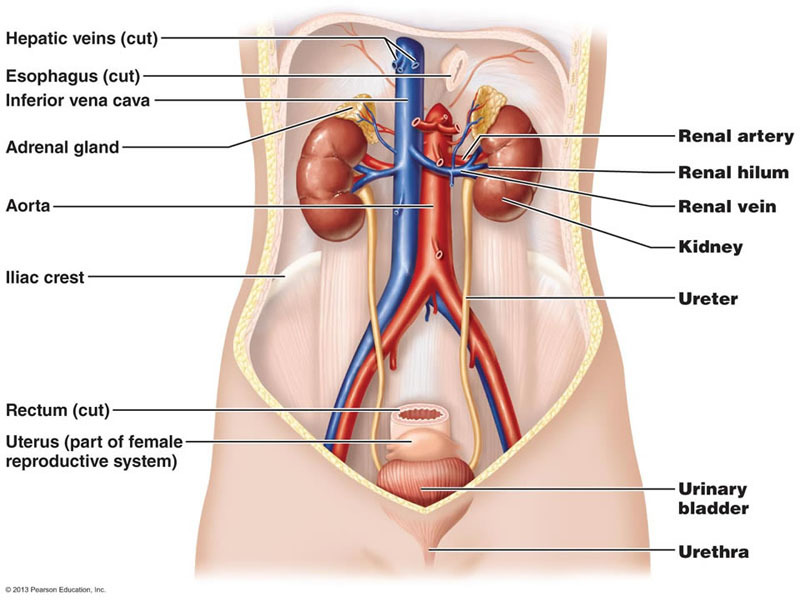
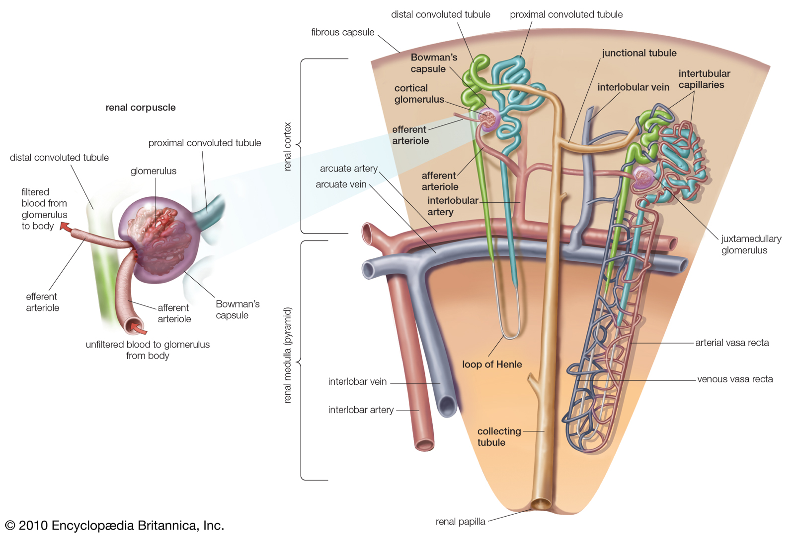
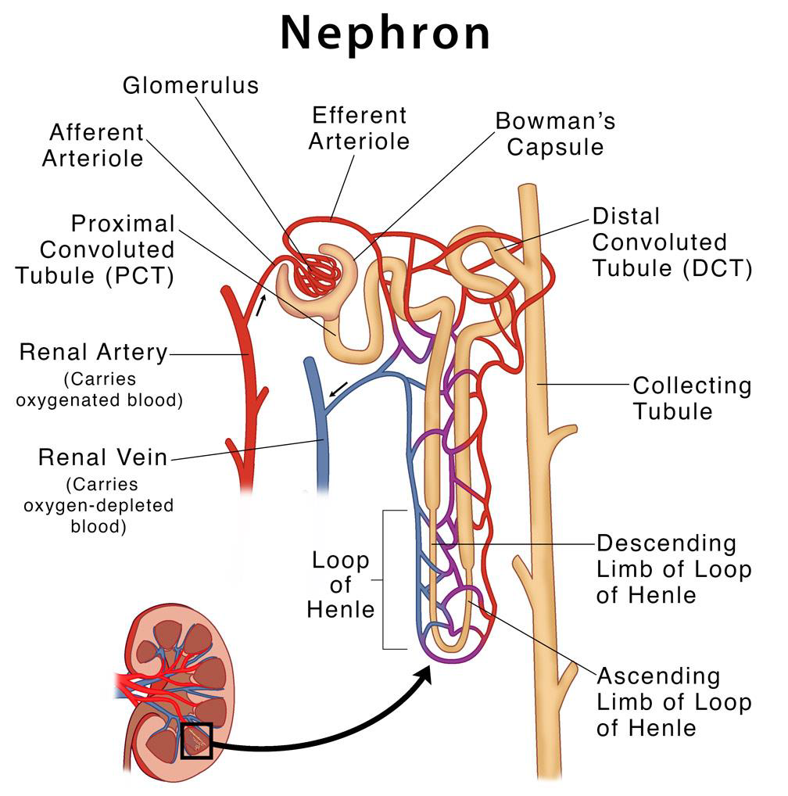
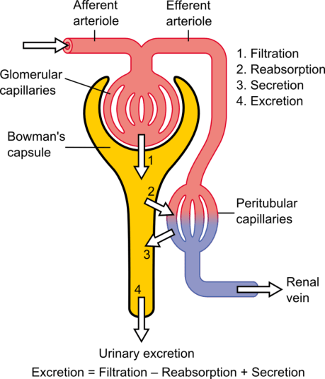

THE URINARY SYSTEMS
all credit goes to Dr. Banaful Roy
Organs of Urinary System
- Kidneys
- Ureters
- Urinary bladder
- Urethra

Location of Kidneys
- Against the dorsal body wall
- At the level of T 12 to L 3
- The right kidney is slightly lower than the left partner due to presence of liver
- Attached to ureters, renal blood vessels & renal hilus
- Atop each kidney is an adrenal (suprarenal) gland

Functions of Kidneys
- Formation & excretion of urine
- Maintain water, acid base & electrolytes balances
- Retention of substances (glucose, amino acids, electrolytes, water)
- Elimination of waste products (urea, uric acid, urates, creatinine, bilirubin, toxins & drugs)
- Produce Red blood cell by erythropoietin
- Regulate blood pressure by renin
- Formation of active form of Vitamin D
- It also produces prostaglandins & thromboxanes
- It maintains blood glucose level by gluconeogenesis
Nephrons
The structural and functional units of the kidneys.
- Responsible for forming urine
- There are about 1 million nephrons in each kidney
- Cortical nephron (85%): Located entirely in the cortex
- Juxtamedullary nephron (15%): Found at the boundary of the cortex and medulla
Classification of Nephron

Parts of Nephron
-
Renal Corpuscles
- Glomerulus
- Bowman's capsule
-
Renal Tubule
- Proximal convoluted tubule (PCT)
- Descending limb of loop of Henle (DL)
- Ascending limb of loop of Henle (AL)
- Distal convoluted tubule (DCT)
- Collecting tubule or duct (CD)

Renal Processes
The kidneys filter unwanted substances from the blood and produce urine to excrete them.
There are 3 main steps of urine formation:
- Glomerular Filtration
- Tubular Reabsorption
- Tubular Secretion
